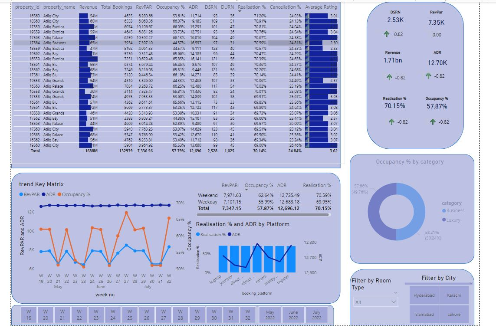

I have used single or a combination of the tools to execute these projects.The Projects Used SQL and Python for Exploratory Data Analysis and Data Cleaning. For Visualisations and dashboarding Power BI and Tableau are used. Python (Matplotlib, Seaborn) is also used for visualising the data for Analysis.

Amazon Sales and Inventory Analysis and Dashboarding through Power Query and Power BI
Transformed Data in Power Query. Developing Dax functions to answer problem statement. Following a Mock up. Using Dax, measures and columns to develop relevant marices. Developing a dashboard and enhancing visualisation through Button and Slicer Usage.


Data Cleaning of Survey of Data Experts
Cleaned Data of Experts working in data domain. This included changing data types, replacing null values, standardizing responces and splitting columns to make more analysable data.